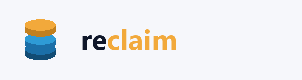
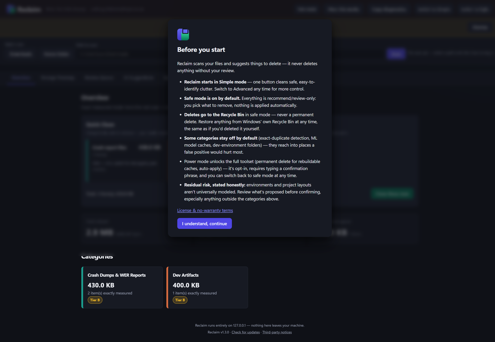
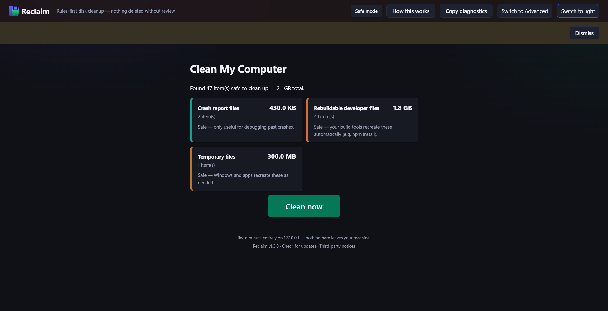
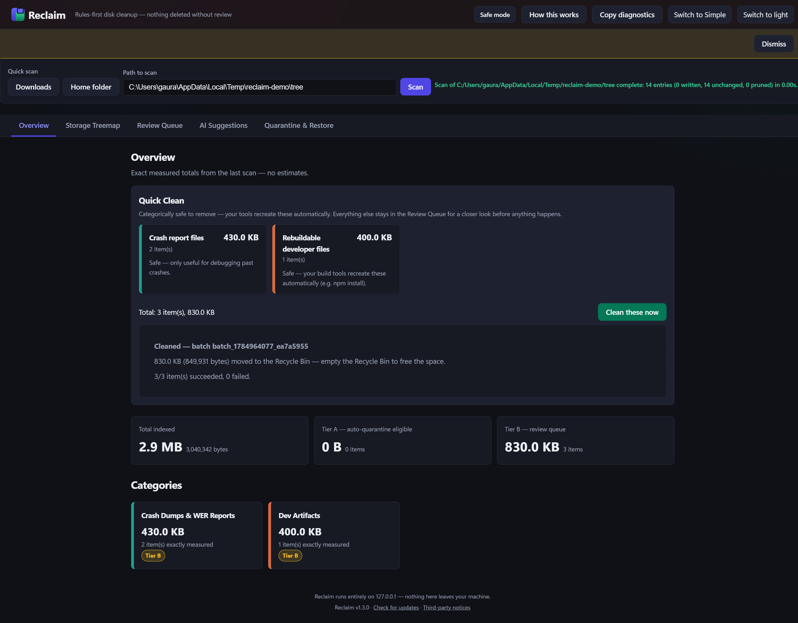
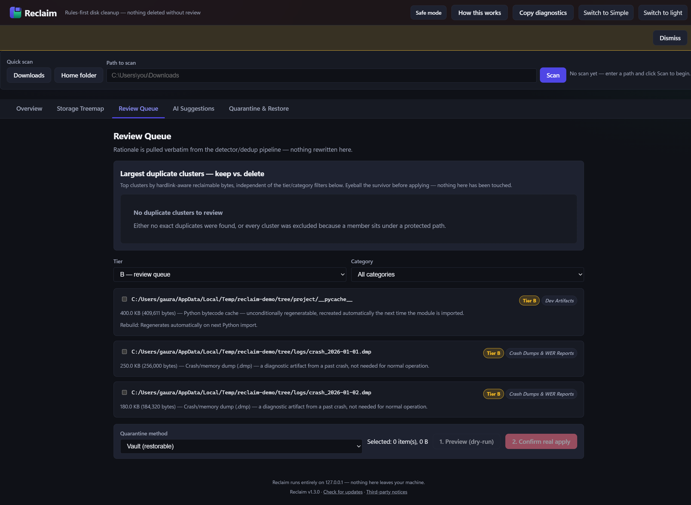
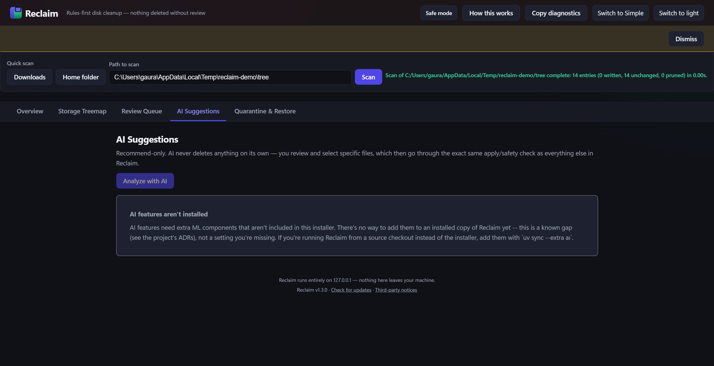

Safe by default
Every install starts in safe mode: deletes go to the Recycle Bin, nothing applies automatically, and the riskiest categories stay off until you opt in.

Reclaim finds files that are safe to remove — caches your tools rebuild, temp files, duplicate copies — shows you exactly why, and never deletes anything without your review. Starts in Simple mode: one button, no path typing, no decisions to make.
Download for WindowsWindows 10/11 only.
Every install starts in safe mode: deletes go to the Recycle Bin, nothing applies automatically, and the riskiest categories stay off until you opt in.
Every suggestion comes with a plain-language reason (e.g. "rebuilds on next
npm install") — never a fake confidence score standing in for an
explanation.
No telemetry, no analytics, no account, no server side at all. Read the full privacy statement.





Windows will likely show a SmartScreen prompt ("Windows protected your PC") the first time you run the installer — this is expected for a small, unsigned, low-download-count app, not a virus verdict. Click More info then Run anyway. See the README's SmartScreen section for the full explanation, including why the project stays unsigned for now.